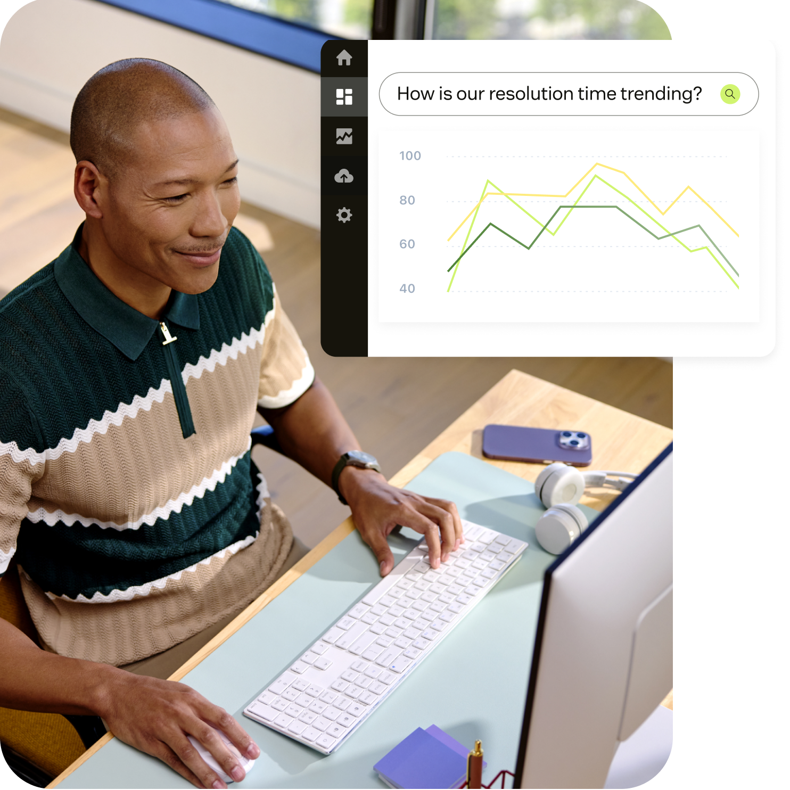

Dashboards are trusted and easy to start with. Where they fall short is the step after the number: people can’t see what changed, they aren’t told when something needs attention, and they rebuild the story in spreadsheets, slides, or outside AI tools before anyone else sees it. Customers want AI that notices and explains, but they want control over who sees data and what gets done. They don’t want operational actions from a dashboard.
✳ CUSTOMER RESEARCH · OCTOBER 2026
From insight
to action.
What happens after a dashboard raises a question? A research synthesis on how enterprise teams notice, investigate, decide, and act — and where AI can help without taking control away.

Customers use dashboards to get the numbers, then leave Zendesk to make sense of them.
JOURNEY
How users move from signal to action
IN PRACTICE
How teams use AI today
Dashboard interviews
Spot week-to-week changes and configuration issues
Nick uses Claude Code to review weekly ticket data, call out changes, and catch an SLA setup issue before waiting weeks for the dashboard data.
“I got my weekly ticket pull from Claude Code, and it’s like, ‘just a heads up, I think you set up these SLAs wrong.’ And I had.”Nick Wolf · Dashboard interviews
Dashboard interviews
Turn exported data into presentable reports
Tim uploads Zendesk exports to Claude and asks it to make presentation or PDF outputs, including calculations and visual formatting.
“I use AI to build the report… you tell it what to do and it kind of creates it for you and it’s just easier and faster.”Tim Santoro · Dashboard interviews
Dashboard interviews
Answer questions during live client calls
Lané uses quick reports to answer a client’s question without stopping to build a full report.
“We do know that we can do the quick reports and we can quickly get some of the data if we ask a question… especially on a live client call.”Lané Lubbe · Dashboard interviews
Dashboard interviews
Ask questions across connected data
Pedro uses a Ripit connection in Claude to explore operational data conversationally, refine metrics, and bring answers into the wider workflow.
“In the chat interface it has a connector with Ripit and you can just ask anything about the data.”Pedro Cassian · Dashboard interviews
EAP interviews
Find themes, deflection opportunities, and create exec-ready slides
Rachel combines ticket-summary exports in Excel, asks Microsoft Copilot for common themes and opportunities, then uses it to create an executive slide deck. Her team made changes based on the analysis.
“I put all that data together, putting it in Copilot… asking it to spot common themes and trends… opportunities for ticket deflection… opportunities for efficiencies.”Rachel Harris · EAP interviews
EXPECTATIONS
Where customers see AI opportunity
01
CREATE WITH A CONVERSATION5/5 · +1 EAP
Build dashboards and reports from a plain-language request
Start with the user’s goal, generate the view, then let them refine the data, layout, and metrics.
“I would love to have basically a chat conversation explaining my needs and have it build me a dashboard.”Nick Wolf · Dashboard interviews
02
NOTICE WHAT I’D MISS4/5 · +1 EAP
Surface relevant changes and explain why they matter
Highlight unusual movement, connect it to likely causes, and make alerts specific enough to earn attention.
“I would love to have an AI tool… know the trends I’m looking for… and then have it proactively tell me when those things happen.”Nick Wolf · Dashboard interviews
03
TURN SIGNALS INTO A STORY3/5 · +1 EAP
Summarize findings for people who don’t want raw data
Generate audience-ready commentary and summaries that explain what is happening, why, and what deserves follow-up. Rachel also uses Copilot today to synthesize patterns into executive-ready slides.
“It helps me see trends… ‘this is different from last week… because of this Y and Z reasons.’”Nick Wolf · Dashboard interviews
AI GUARDRAILS
Participants want AI to help find and explain patterns. Sharing, access, and consequential operational actions still need a human in control.
✳FROM RESEARCH TO HYPOTHESES
What people told us becomes what we explore next.
A VISION FOR DASHBOARD BUILDER
From dashboards
to data apps.
Dashboard Builder turns metrics into focused, reusable experiences—bringing data, context, and investigation together around the decisions each team needs to make.
01↗
BUILD FOR YOUR NEEDS
What if a dashboard started with your question?
Describe the goal; let AI suggest metrics and filters; then refine and save the dashboard.
✳ Dashboard BuilderNew chat
Describe the dashboard you need…↑
RESEARCH SIGNAL
↓People spend time assembling dashboards around the questions their teams need to answer.
PRODUCT HYPOTHESIS
↓Start from the person’s goal, then generate an editable, inspectable dashboard draft.
TO TEST
Can people reach a useful dashboard faster by starting with their need?
02↗
FIND PATTERNS & TRENDS
What if you could explore trends and patterns when they matter?
Compare metrics with the previous period; summarize what changed and where; ask AI for a deeper explanation when useful.
Trend detected✳
Conversation volume and first reply time both rose week over week
Conversations+18%
First reply time+14%
OCT 12SAME PERIOD · OCT 18
Same period · Oct 12–18
Related movement, not confirmed cause
Related movement, not confirmed cause
Explore pattern →
RESEARCH SIGNAL
↓People look for trends manually; deeper pattern analysis can add cost and noise.
PRODUCT HYPOTHESIS
↓Show trends in view and make cross-metric pattern analysis available on request.
TO TEST
When do people want deeper analysis, and what latency or cost is acceptable?
03↗
INVESTIGATE
What if drill-in felt like one continuous thought?
Keep filters as you move from a changed metric to its segments and records. AI suggests the next step; you choose whether to explore it, preview the evidence, and save or share your path.
INVESTIGATION PATHFollow the evidence
FLAGGED METRICTicket volume↑ 18% vs. last week
→
EXPLORE SEGMENTBy contact reasonMessaging · +31%
→
UNDERLYING DATA2,481 ticketsPreview in side panel ↗
✳
OPTIONAL AI SUGGESTIONCheck by team next?
Explore →✓ Filters stay · AI suggests, you choose · Save & share path
RESEARCH SIGNAL
↓Drill-in often stops before the useful detail, sending people to exports or other tools.
PRODUCT HYPOTHESIS
↓Keep filters and time range as people move from metric to segment to record; offer optional next cuts.
TO TEST
Does a continuous path reduce context switching, and which suggested cuts help?
04↗
MAKE SENSE
What if every finding could become an evidence-linked summary?
Summarize what changed and where; link claims to charts and records; review and edit before sharing.
RESEARCH SIGNAL
↓Findings often need to reach people who never open the dashboard.
PRODUCT HYPOTHESIS
↓Draft editable summaries that link claims to evidence and separate facts from possible explanations.
TO TEST
Do evidence-linked drafts reduce reporting effort while keeping people confident in each claim?
DESIGN PRINCIPLE
Keep the evidence close. Keep exploration in the user’s hands. Keep AI claims inspectable and editable.